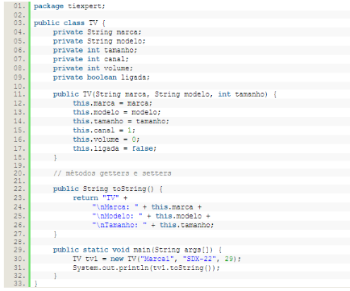
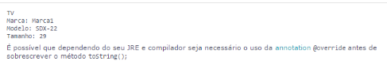

Polimorfismo, que vem do grego "muitas formas". É o termo definido em linguagens orientadas a objeto - como o Java - para a possibilidade de se usar o mesmo elemento de forma diferente.
Especificamente em Java, polimorfismo se encontra no fato de podemos modificar totalmente o código de um método herdado de uma classe diferente, ou seja, sobrescrevemos o método da classe pai.
Portanto, polimorfismo está intimamente ligado a herança de classes.
Um pequeno exemplo para simplificar essa característica segue abaixo:
Sabemos que toda classe em Java herda implicitamente a classe Object. A classe Object possui alguns métodos, dentre eles o método toString().
O método toString() original, descreve qual instância de objeto está sendo utilizada. Resumidamente, ele cria um texto com o nome da classe mais um código hexadecimal que cada instância possui diferente de outra, chamado hash code (é como um RG daquela instância).
Então, se tivéssemos a classe TV dentro do pacote tiexpert e usássemos o comando: System.out.println (tv1.toString()). O que apareceria no console seria algo como: tiexpert.TV@c17124.
Então o que faremos para melhorar será usar o polimorfismo para sobrescrever o método toString(), colocando o texto da forma que desejarmos.
Agora, o resultado da linha System.out.println (tv1.toString()) não será mais:
